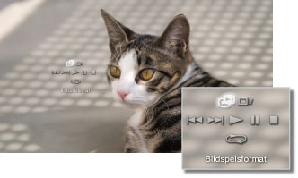

Foto > Se bilder som ett bildspel
Se bilder som ett bildspel
Varje bild visas automatiskt i ordning. När du har valt ikonen för en mapp eller media som innehåller bilder och sedan trycker på START-knappen, startar bildspelet.
Tips!
- Du kan också starta bildspelet från kontrollpanel eller alternativmenyn för en viss bild.
- Om det inte går att starta bildspelet genom att trycka på START-knappen, kan du starta det via kontrollpanelen.
Använda kontrollpanelen för ett bildspel
Om du trycker på  -knappen under ett bildspel visas kontrollpanelen.
-knappen under ett bildspel visas kontrollpanelen.

 |
Bildspelsformat | Välj ett av fem visningsmönster för bildspel. |
|---|---|---|
 |
Bildspelshastighet | Du kan välja mellan tre hastigheter: [Snabb] > [Normal] > [Långsam]. |
 |
Föregående | Gå till föregående bild. |
 |
Nästa | Gå till nästa bild. |
 |
Spela upp | Starta bildspelet. |
 |
Paus | Gör paus i bildspelet. |
 |
Stopp | Stoppa bildspelet. |
 |
Upprepa | Visa bildspelet upprepade gånger. |
Tips!
När (Bildspelsformat) ställts in på [Fotoalbum] eller [Fotoalbum 2], använder du den trådlösa SIXAXIS™-kontrollens högra spak för att styra funktioner såsom förstoring eller förminskning av bildens storlek, eller för anpassning av bildspelets hastighet.
Visa ett bildspel samtidigt som man spelar musik
Du kan visa ett bildspel och spela musik samtidigt.
1. |
Starta uppspelningen av musik under |
|---|---|
2. |
Tryck på PS-knappen. |
3. |
Gå till |
 (Musik).
(Musik). (Foto), markera de bilder eller mappar du vill visa i bildspelet och tryck sedan på START-knappen.
(Foto), markera de bilder eller mappar du vill visa i bildspelet och tryck sedan på START-knappen.Tips!
- Om du trycker på PS-knappen under samtidig uppspelning/visning, visas XMB™-menyn och du kan byta musik eller bilder.
- För att avsluta måste du stoppa visningen av bildspelet och uppspelningen av musiken var för sig. När någon av dem stoppats markerar du det spår eller den bild som spelas/visas och stoppar uppspelningen/visningen.
- Du kan inte spela upp en super audio CD samtidigt som ett bildspel visas.
- Om
 (Inställningar) >
(Inställningar) >  (Musikinställningar) > [Utdatafrekvens] är inställd på [44,1/88,2/176,4 kHz], kan du inte spela upp musik samtidigt som ett bildspel visas.
(Musikinställningar) > [Utdatafrekvens] är inställd på [44,1/88,2/176,4 kHz], kan du inte spela upp musik samtidigt som ett bildspel visas.
Obs!
Super Audio CD kan inte spelas upp på vissa PS3™-system. För mer information, se [Olika typer av uppspelningsbara skivor].